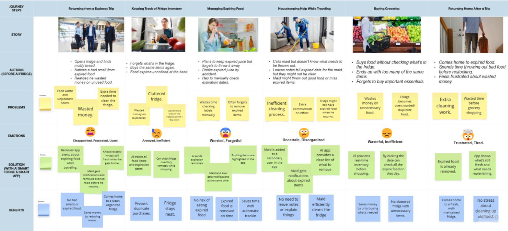

Overview
According to Safdie (2024), the problem of food waste has become a widespread issue, with over 30% of food being lost or wasted annually. We want to find ways to improve trust in food management systems among consumers, as the current status quo leads to uncertainty about food freshness and contributes to unnecessary waste. We believe that households and sustainability-conscious consumers will be interested in our solution if we can effectively address this issue. We will build a smart fridge system that uses AI to scan and track food items, notifying users when products are nearing expiration and suggesting ways to use them, cultivating a more efficient and sustainable approach to food consumption.
Target user group
Sustainability-conscious consumers, busy households, and individuals interested in reducing food waste and saving on grocery expenses.
Wireframes
Wireframe sketches and low-fidelity designs.
Persona 1 - (Restaurant manager)

Journey Map

Storyboard 1


Persona 2 - (Businessman)

Journey Map 2
Storyboard 2


Website
Check out the full Smart Fridge project on WordPress: https://smartfridge25.wordpress.com/
The main page directs users to the first and second generation of our fridge product, which is our first draft and the final design. The top navigation directs users to the Smart Fridge App user guide and Smart Monitor user guide.
The redirected pages illustrate the functionalities, specifications of each generation. Including a button to place an order, to mimic the real shop website.